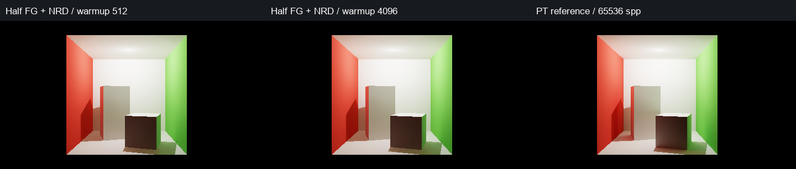

不修改采样、滤波或上采样参数，保持静止相机，延长 NRD 预热。每个阶段都评价之后连续 64 张单帧输出；没有额外图像平均。4096 相对 512 帧的 MSE 变化 -0.03%，HDR-FLIP 变化 -0.10%。
| NRD 预热帧数 | MSE ↓ | HDR-FLIP ↓ | 时间方差 ↓ |
|---|---|---|---|
| 512 | 1.900586e-05 | 0.12600 | 3.251584e-07 |
| 1024 | 1.944782e-05 | 0.12700 | 3.188733e-07 |
| 2048 | 1.929129e-05 | 0.12650 | 3.226104e-07 |
| 4096 | 1.900092e-05 | 0.12588 | 3.27616e-07 |

复用同一未经降噪的 PT 65536 spp reference、可见表面 mask 和 HDR-FLIP 曝光参数。仍是 480×270 输出 / 240×135 FG 与 NRD。Probe 先预热 2048 帧，之后始终更新；NRD 仅在开始重置一次，四个窗口之间没有历史重置。延长测试也让 probe 得到更多更新，因此测的是等待整个流程后的效果。
NRD RELAX 当前 diffuseMaxAccumulatedFrameNum=31，快速历史为 2 帧。它限制历史权重，并持续混入当前样本，不会像 AccumulatePass 那样把等过的 4096 帧全部等权平均。因此输出达到稳态后仍可能有噪声，空间滤波与半分辨率重建的偏差也不会仅靠等待消失。此实验只能判断当前设置延长等待的效果，不能单独确定采样、滤波、重建各自贡献了多少误差。
新跑的 512 帧窗口相对上次同条件结果：MSE 变化 +0.000%，HDR-FLIP 变化 +0.000%。完整逐帧数据保留在 CSV。
build\windows-vs2022\bin\Release\Mogwai.exe --device-type d3d12 --headless --deferred --script tests/ddgi/half_gather_long_history.py --width 480 --height 270 --logfile build/half-gather-long-history.log python tests/ddgi/score_half_gather_long_history.py